数学的準備
多変量解析 - 第2講
(Press ? for help, n and p for next and previous slide)
講義の内容
- 確率
- 確率分布
- 確率質量関数・確率密度関数
- 正規分布 (\(\chi^2\)分布，\(t\)分布，\(F\)分布 )
- 統計
- 統計量 (標本平均，不偏分散・共分散，相関係数)
- 最尤法 (尤度関数)
- Bayes の定理
- 検定の考え方
- 統計的仮説検定
確率
確率分布
定義
注目する事象(標本空間の部分集合)に対して， それが起きる確率(区間 \([0,1]\) の実数)を返す関数
\begin{equation} P(\text{事象})=\text{確率値} \end{equation}を 確率分布 という．
- 応用上重要な分布
- 離散分布
- 連続分布 (絶対連続な分布)
確率質量関数
離散分布を記述する方法
1つの見本点 \(x\) からなる事象(根元事象という)を \(A=\{x\}\) とする． 事象 \(A\) の起きる確率
\begin{equation} P(A=\{x\})= p(x) \end{equation}を表す関数 \(p\) を 確率質量関数 という．
確率密度関数
連続分布を記述する方法
事象 \(A\) が起きる確率は 確率密度関数 \(p\) の積分
\begin{equation} P(A)=\int_A p(x)dx \end{equation}で表される．
事象 \(A\) が十分小さな集合の場合
\(A\) に含まれる適当な点を \(x\) とし， \(A\) の大きさ(考える空間により体積や面積に相当)を \(|A|\) と書くことにすれば， 事象 \(A\) の起きる確率を密度と事象の大きさの積
\begin{equation} P(A)=\int_A p(x)dx \simeq p(x)\cdot|A| \end{equation}で近似することができる．
正規分布 (normal/Gaussian distribution)

Figure 1: 正規分布 (平均\(0\),分散\(1\))
- 標本空間 : \((-\infty,\infty)\)
- 母数 : 平均 \(\mu\), 分散 \(\sigma^{2}\)
密度関数 :
\begin{equation} p(x) = \frac{1}{\sqrt{2\pi}\sigma}e^{-\frac{(x-\mu)^{2}}{2\sigma^{2}}} \end{equation}- 備考 : \(\mu=0,\sigma=1\) のとき 標準正規分布 と呼ぶ．
多次元正規分布
- 標本空間 : \(\mathbb{R}^{p}\)
- 母数 : 平均 \(\boldsymbol{\mu}\), 分散共分散行列 \(\Sigma\)
密度関数 :
\begin{equation} p(\boldsymbol{x}) =\frac{1}{\sqrt{(2\pi)^p|\Sigma|}} e^{-\frac{1}{2}(\boldsymbol{x}-\boldsymbol{\mu})^{\mathsf{T}} \Sigma^{-1}(\boldsymbol{x}-\boldsymbol{\mu})} \end{equation}
正規分布の特徴付け
- 性質
- さまざまな誤差の集積は正規分布となる(中心極限定理)
- 同じ分散(ばらつき)を持つ分布の中で最も情報量(エントロピー)が大きい
- 用途
- 誤差の分布に関する知識がないときには正規分布だと考えておくと安全なことが多い
- 多変量解析の多くの手法は誤差の分布に関して正規性を仮定して導出する
\(\chi^{2}\)分布 (\(\chi^{2}\)-distribution)

Figure 2: \(\chi^{2}\)分布 (自由度\(3\))
- 標本空間 : \([0,\infty)\)
- 母数 : 自由度 \(\nu\)
密度関数 :
\begin{align} p(x) &= \frac{1}{2^{\nu/2}\Gamma(\frac{\nu}{2})}x^{\nu/2-1}e^{-x/2}\\ &\quad\Gamma(z)=\int_0^\infty e^{-t}t^{z-1}dt \end{align}- 備考 : 標準正規分布に従う独立な確率変数の2乗和の分布
\(\chi^{2}\)分布の特徴付け
- 性質
標準正規分布に従う独立な確率変数の2乗和の分布
\begin{align} Z&=\sum_{i=1}^{\nu}X_{i}^{2} \sim \chi^{2}(\nu) \quad\text{(自由度 \(\nu\) の \(\chi^{2}\) 分布)}\\ &X_{i}\sim \mathcal{N}(0,1)\;(i=1,\dotsc,\nu) \quad\text{(標準正規分布)} \end{align}- 分散\(\sigma^{2}\)の正規分布に従う確率変数の不偏分散は \(\chi^{2}\)分布に従う確率変数の\(\sigma^{2}\)倍となる
- 用途
- 分散の大きさに関する検定に用いられる
- 独立性検定・適合度検定などの検定でも用いられる
\(t\)分布 (Student’s \(t\)-distribution)

Figure 3: \(t\)分布 (自由度\(3\))
- 標本空間 : \((-\infty,\infty)\)
- 母数 : 自由度 \(\nu\)
密度関数 :
\begin{equation} p(x)= \frac{\Gamma\left(\frac{\nu+1}{2}\right)} {\sqrt{\nu\pi}\Gamma\left(\frac{\nu}{2}\right)} \left(1+\frac{x^{2}}{\nu}\right)^{-\frac{1}{2}(\nu+1)} \end{equation}- 備考 : 標準正規分布と \(\chi^{2}\)分布に従う独立な 確率変数の比の分布
\(t\)分布の特徴付け
- 性質
標準正規分布と \(\chi^{2}\)分布に従う独立な確率変数の比の分布
\begin{align} Z&=\frac{X}{\sqrt{Y/\nu}} \sim \mathcal{T}(\nu) \quad\text{(自由度 \(\nu\) の \(t\) 分布)}\\ &X\sim \mathcal{N}(0,1), \quad Y\sim \chi^{2}(\nu) \end{align}- 正規分布に従う確率変数の標本平均と真の値の差は 不偏分散で標準化すると\(t\)分布に従う確率変数となる
- 用途
- 平均値を推定する問題の検定に利用される
- 信頼区間の構成に利用される
\(F\)分布 (\(F\)-distribution)

Figure 4: \(F\)分布 (自由度\(3,5\))
- 標本空間 : \([0,\infty)\)
- 母数 : 自由度 \(\nu_{1},\nu_{2}\)
密度関数 :
\begin{align} p(x) &= \frac{(\nu_{1}/\nu_{2})^{\nu_{1}/2}}{B(\nu_{1}/2,\nu_{2}/2)} \frac{x^{\nu_{1}/2-1}}{(1+\nu_{1}x/\nu_{2})^{(\nu_{1}+\nu_{2})/2}}\\ &\quad B(x,y)=\int_{0}^{1}t^{x-1}(1-t)^{y-1} dt \end{align}- 備考 : \(\chi^{2}\)分布に従う独立な確率変数の比の分布
\(F\)分布の特徴付け
- 性質
\(\chi^{2}\)分布に従う独立な確率変数の比の分布
\begin{align} Z&=\frac{Y_{1}/\nu_{1}}{Y_{2}/\nu_{2}} \sim \mathcal{F}(\nu_{1},\nu_{2}) \quad\text{(自由度\(\nu_{1},\nu_{2}\)の\(F\)分布)}\\ &Y_{i}\sim \chi^{2}(\nu_{i})\;(i=1,2) \end{align}- 正規分布に従う確率変数の2つの独立な標本の不偏分散の比は \(F\)分布に従う確率変数となる
- 用途
- 分散を推定する問題の検定に利用される
- 分散の信頼区間の構成に利用される
大数の強法則
定理
\(\{X_n\}\) を確率変数列として
\begin{equation} S_n=\sum_{k=1}^n X_k \end{equation}とする． \(\{X_n\}\) が独立で， \(\{\mathrm{Var}(X_n)\}\) が有界ならば
\begin{equation} \frac{S_n-\mathbb{E}[S_n]}{n}\to 0 \text{ a.s.} \end{equation}が成り立つ．
同分布の中心極限定理
定理
\(\{X_n\}\) は独立で， 平均 \(\mu\) ，標準偏差 \(\sigma\) の同じ分布に従うとする． このとき，すべての実数 \(a < b\) に対して
\begin{equation} P\Bigl(a\leq\frac{\sqrt{n}(\bar{X}_n-\mu)}{\sigma}\leq b \Bigr) \to\frac{1}{\sqrt{2\pi}}\int_a^be^{-\frac{x^2}{2}}dx\quad (n\to\infty) \end{equation}が成り立つ．
定理の意味
\(X_i\) の分布が何であっても， サンプル数 \(n\) が十分大きければ， 標本平均と真の平均の差 \(\bar{X}_n-\mu\) の分布は， 標準正規分布 を利用して
\begin{equation} P\Bigl(a\frac{\sigma}{\sqrt{n}}\leq\bar{X}_n-\mu\leq b\frac{\sigma}{\sqrt{n}} \Bigr) \simeq \frac{1}{\sqrt{2\pi}}\int_a^be^{-\frac{x^2}{2}}dx \end{equation}で近似できる．
推定量の漸近正規性
漸近正規性
多くの推定量 \(\hat{\theta}\) の分布は正規分布で近似できる
- モーメントに基づく記述統計量は漸近正規性をもつ
- 最尤推定量は広い範囲の確率分布に対して漸近正規性をもつ
- いずれも中心極限定理にもとづく
- 推定量の評価に正規分布から導かれる分布が利用できる
演習
問題
標準正規分布の密度関数
\begin{equation} p(x) = \frac{1}{\sqrt{2\pi}}e^{-\frac{x^{2}}{2}} \end{equation}を\(\mathbb{R}\)上で積分すると 1となることを確かめよ
- 標準正規分布に従う確率変数を\(X\)とする． \(X\)が 0付近の値をとる確率と 1付近の値をとる確率の比を求めよ
解答例
2つの標準正規分布の積を考えて， 重積分を極座標に変換すればよい
\begin{align} &\int_{-\infty}^{\infty} \int_{-\infty}^{\infty} e^{-x^{2}/2}e^{-y^{2}/2}dxdy\\ &= \int_{0}^{2\pi} \int_{0}^{\infty} e^{-r^{2}/2}rdrd\theta = 2\pi\int_{0}^{\infty}e^{-z}dz =2\pi \end{align}
微小な区間 \(\Delta\) を考えて， 密度を用いた近似計算を利用すればよい
\begin{align} &\frac{P(X\text{が0付近})}{P(X\text{が1付近})}\\ &\simeq\frac{p(0)|\Delta|}{p(1)|\Delta|} =\frac{\exp(0)}{\exp(-1/2)}=\sqrt{e}\simeq 1.65 \end{align}
統計
記述統計量
- 記述統計量 : (または要約統計量・基本統計量)
- データを簡潔に要約して表すための統計値
- その集団全体の特徴を表す重要な指標
- 一般に確率分布は未知
手に入る少数のサンプル(観測データ)から 推定
\begin{equation} X_1,X_2,\dots,X_n \end{equation}- 真の値と観測データによる推定には差が存在
平均
- データの代表値を表す記述統計量
平均 (mean)
\begin{equation} \mu=\mathbb{E}[X] = \begin{cases} \sum_{x\in\Omega} x p(x), &\text{(離散分布の場合)}\\ \int_{x\in\Omega} x p(x)dx, &\text{(連続分布の場合)} \end{cases} \end{equation}標本平均 (sample mean)
\begin{equation} \bar{X} =\frac{1}{n}\sum_{i=1}^{n}X_{i} =\frac{X_{1}+\dotsb+X_{n}}{n} % =\frac{X_1+X_2+\cdots+X_n}{n} \end{equation}
分散
- データのばらつき具合を表す記述統計量
分散 (variance)
\begin{equation} \mathrm{Var}(X)=\sigma^{2}=\mathbb{E}[(X-\mu)^{2}] \end{equation}標本分散 (sample variance)
\begin{equation} S^{2} =\frac{1}{n}\sum_{i=1}^n(X_{i}-\bar{X})^{2} =\frac{(X_{1}-\bar{X})^{2}+\dotsb+(X_{n}-\bar{X})^{2}}{n} % =\frac{(X_1-\bar{X})^2+(X_2-\bar{X})^2+\cdots+(X_n-\bar{X})^2}{n} \end{equation}
標本平均・分散の不偏性
標本平均は \(\mu\) の 不偏推定量である
\begin{equation} \mathbb{E}[\bar{X}]=\mu \end{equation}標本分散は \(\sigma^2\) の 不偏推定量ではない
\begin{equation} \mathbb{E}[S^2]=\frac{n-1}{n}\sigma^2 \end{equation}- 標本分散は平均的には真の分散を 過小推定 する
不偏分散
- 不偏性を担保した分散の推定量
バイアス補正 : 標本分散に \(n/(n-1)\) を乗じたもの
\begin{equation} s^2=\frac{n}{n-1}S^2=\frac{1}{n-1}\sum_{i=1}^n(X_i-\bar{X})^2 \end{equation}は \(\sigma^2\) の不偏推定量となる
標準偏差
標準偏差 (standard deviation)
\begin{equation} \sigma=\sqrt{\mathrm{Var}(X)}=(\mathbb{E}[(X-\mu)^{2}])^{1/2} \end{equation}- 分散の平方根
標本標準偏差 (sample standard deviation)
\begin{equation} \hat\sigma=s \end{equation}- 通常, 不偏分散の平方根 \(s\) を用いる
- 一般に \(s\) は標準偏差 \(\sigma\) の 不偏推定量ではない
標準化
- 複数データの分析のために単位や基準を揃える方法
データ \(X_{1},X_{2},\dotsc,X_{n}\) の標準化 (standardization)
\begin{equation} Z_{i}=\frac{X_i-\bar{X}}{s}\quad(i=1,2,\dotsc,n) \end{equation}- \(s\) の代わりに \(S\) で割って定義する文献もある
- 定義から \(Z_{1},Z_{2},\dotsc,Z_{n}\) の 標本平均は0, 不偏分散は1 に規格化される
- \(Z_{i}\) : 標準得点 (standard score) あるいは Zスコア (Z-score) と呼ばれる
偏差値
- 別の基準での標準化
- 教育学や心理学では, 平均50, 標準偏差10が好まれる
標本平均50, 標準偏差10への線形変換
\begin{equation} T_{i}=10Z_{i}+50\quad(i=1,\dotsc,n) \end{equation}- \(T_{i}\) : 偏差値得点 あるいは Tスコア (T-score) と呼ばれる
共分散
- 複数のデータ間の関係を知るための記述統計量
共分散 (covariance)
\begin{equation} \mathrm{Cov}(X,Y)=\mathbb{E}[(X-\mathbb{E}[X])(Y-\mathbb{E}[Y])] \end{equation}標本共分散 (sample covariance)
\begin{equation} \mathrm{Cov}(X,Y)=\frac{\sum_{i=1}^n(X_i-\bar{X})(Y_i-\bar{Y})}{n-1} \end{equation}
相関
- 2種類のデータ間の比例関係の大きさ
相関 (correlation)
\begin{equation} \rho=\frac{\mathrm{Cov}(X,Y)}{\sqrt{\mathrm{Var}(X)\mathrm{Var}(Y)}} \end{equation}標本相関 (sample correlation)
\begin{equation} \rho=\frac{\sum_{i=1}^n(X_i-\bar{X})(Y_i-\bar{Y})} {\sqrt{\sum_{i=1}^n(X_i-\bar{X})^2}\sqrt{\sum_{i=1}^n(Y_i-\bar{Y})^2}} \end{equation}
離散分布の尤度関数
- \(X_1=x_1,X_2=x_2,\dots,X_n=x_n\) の同時確率
- 確率質量関数 : \(f_{\boldsymbol{\theta}}(x)\)
- 確率質量関数のパラメタ : \(\boldsymbol{\theta}=(\theta_1,\dots,\theta_p)\)
独立な確率変数の同時確率
\begin{align} & P(X_1=x_1,X_2=x_2,\dots,X_n=x_n) =\prod_{i=1}^nP(X_i=x_i)\\ &= \prod_{i=1}^nf_{\boldsymbol{\theta}}(x_i) =f_{\boldsymbol{\theta}}(x_1)\cdot f_{\boldsymbol{\theta}}(x_2)\cdots f_{\boldsymbol{\theta}}(x_n) \end{align}
定義
パラメタ \(\boldsymbol{\theta}\) に対して 観測データ \(X_1,X_2,\dots,X_n\) が得られる理論上の確率
\begin{equation} L(\boldsymbol{\theta}) =\prod_{i=1}^nf_{\boldsymbol{\theta}}(X_i) \end{equation}を \(\boldsymbol{\theta}\) の 尤度 と言い， \(\boldsymbol{\theta}\) の関数 \(L\) を 尤度関数 と呼ぶ．
- 観測データ \(X_1,X_2,\dots,X_n\) が現れるのにパラメタ \(\boldsymbol{\theta}\) の値がどの程度尤もらしいかを測る尺度となる
連続分布の尤度関数
- \(x_1\leq X_1\leq x_1+\delta,\dotsc,x_n\leq X_n\leq x_n+\delta\) の同時確率
- 確率密度関数 : \(f_{\boldsymbol{\theta}}(x)\)
- 確率密度関数のパラメタ : \(\boldsymbol{\theta}=(\theta_1,\dots,\theta_p)\)
独立な確率変数の同時確率
\begin{align} & P(x_1\leq X_1\leq x_1+\delta,\dotsc,x_n\leq X_n\leq x_n+\delta) =\prod_{i=1}^nP(x_i\leq X_i\leq x_i+\delta)\\ &\simeq \prod_{i=1}^nf_{\boldsymbol{\theta}}(x_i)\delta =f_{\boldsymbol{\theta}}(x_1)\cdot f_{\boldsymbol{\theta}}(x_2)\cdots f_{\boldsymbol{\theta}}(x_n)\delta^{n} \end{align}
定義
パラメタ \(\boldsymbol{\theta}\) に対して 観測データ \(X_1,X_2,\dots,X_n\) が得られる理論上の確率密度
\begin{equation} L(\boldsymbol{\theta}) =\prod_{i=1}^nf_{\boldsymbol{\theta}}(X_i) \end{equation}を \(\boldsymbol{\theta}\) の 尤度 と言い， \(\boldsymbol{\theta}\) の関数 \(L\) を 尤度関数 と呼ぶ．
- 確率ではないので1より大きな値となることもある
最尤法
最尤法
観測データに対して「最も尤もらしい」パラメタ値を \(\boldsymbol{\theta}\) の推定量として採用する方法 を最尤法という．
最尤推定量
\(\Theta\) を尤度関数の定義域として， 尤度関数を最大とする \(\hat{\boldsymbol{\theta}}\)
\begin{equation} L(\hat{\boldsymbol{\theta}}) =\max_{\boldsymbol{\theta}\in\Theta}L(\boldsymbol{\theta}). \end{equation}を \(\boldsymbol{\theta}\) の 最尤推定量 という．
Bayes の定理 (基本形)
定理
条件付確率では次の等式が成り立つ．
\begin{equation} P(A|B) =\frac{P(A)P(B|A)}{P(B)}. \end{equation}- 左辺と右辺で事象 \(A,B\) の役割が異なる
Bayes の定理 (一般形)
定理
\(\Omega=A_1+A_2+\dotsb+A_n\) のとき
\begin{equation} P(A_i|B) =\frac{P(A_i)P(B|A_i)}{\sum_{k=1}^nP(A_k)P(B|A_k)} \end{equation}が成り立つ．
演習
問題
以下の問に答えなさい
A先生は大の野球ファンで， 球団Hの勝敗で翌日の機嫌が左右されるとしよう． よくよく調べた結果
- 球団Hが勝つと90%の確率で機嫌が良い
- 球団Hが負けると70%の確率で機嫌が悪い
が成り立っているとする．
また球団Hの勝率は現在のところ
- 球団Hは60%の確率で勝つ
- 球団Hは40%の確率で負ける
となっているとする．
- A先生が機嫌が良いときに球団Hが勝った確率は？
- A先生が機嫌が悪いときに球団Hが負けた確率は？
解答例
まず事象を定義する
\begin{align} A&:\text{先生の機嫌が良い}& && A^{c}&:\text{先生の機嫌が悪い}\\ H&:\text{球団が勝つ}& && H^{c}&:\text{球団が負ける} \end{align}条件を書き下す
\begin{align} P(A|H)&=0.9& && P(A^{c}|H)&=0.1\\ P(A^{c}|H^{c})&=0.7& && P(A|H^{c})&=0.3\\ P(H)&=0.6& && P(H^{c})&=0.4 \end{align}
A先生が機嫌が良いときに球団Hが勝った確率は？
\begin{align} P(H|A) &=\frac{P(A,H)}{P(A)}\\ &=\frac{P(A,H)}{P(A,H)+P(A,H^{c})}\\ &=\frac{P(A|H)P(H)}{P(A|H)P(H)+P(A|H^{c})P(H^{c})}\\ &=\frac{0.9\times 0.6}{0.9\times 0.6+0.3\times 0.4}\\ &=\frac{9}{11}\simeq 0.818 \end{align}
A先生が機嫌が悪いときに球団Hが負けた確率は？
\begin{align} P(H^{c}|A^{c}) &=\frac{P(A^{c},H^{c})}{P(A^{c})}\\ &=\frac{P(A^{c},H^{c})}{P(A^{c},H)+P(A^{c},H^{c})}\\ &=\frac{P(A^{c}|H^{c})P(H^{c})}{P(A^{c}|H)P(H)+P(A^{c}|H^{c})P(H^{c})}\\ &=\frac{0.7\times 0.4}{0.1\times 0.6+0.7\times 0.4}\\ &=\frac{14}{17}\simeq 0.824 \end{align}
検定の考え方
統計的仮説検定
- ある現象・母集団に対して仮定された仮説の真偽を データに基づいて統計的に検証する方法
- 検定の基本的手続き
- 帰無仮説(および対立仮説)を立てる
- データから計算できる統計量を設定する
- 検定統計量 という
- 帰無仮説のもとで検定統計量が従う標本分布を求める
- 帰無分布 という
- 実際のデータから検定統計量の値を計算する
- 計算された検定統計量の値が
仮説が正しいときに十分高い確率で
得られるかどうかを判断する
- この閾値を 有意水準 という
例題
- 表の出る確率が高くなるよう細工したコインを見つける問題を考える
- 何回か投げてみる
- 表が裏より出やすければ「いかさま」と判断する
- どのくらい表が出たら怪しいと考えられるだろうか?
問題
- いかさまのないコイン(表の出る確率が0.5)を20回投げたとき， 表が \(k\) 回出る確率を求めなさい
解答
以下の式で計算される
\begin{equation} P(\text{表の回数}=k) = \left(20\atop k\right) 0.5^{k} (1-0.5)^{20-k} \end{equation}
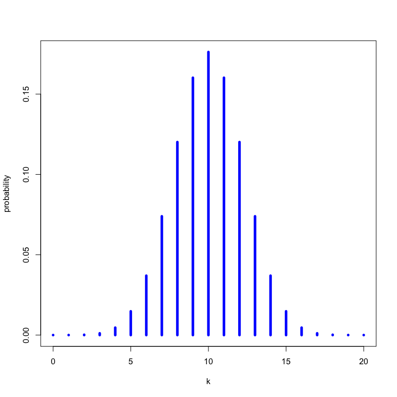
Figure 5: いかさまのないコインの場合
問題
- いかさまのあるコイン(表の出る確率が0.6)を20回投げたとき， 表が \(k\) 回出る確率を求めなさい
解答
以下の式で計算される
\begin{equation} P(\text{表の回数}=k) = \left(20\atop k\right) 0.6^{k} (1-0.6)^{20-k} \end{equation}
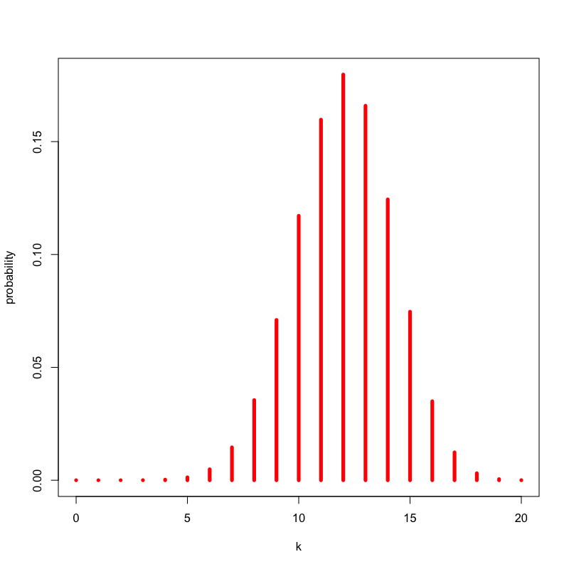
Figure 6: いかさまのないコインの場合
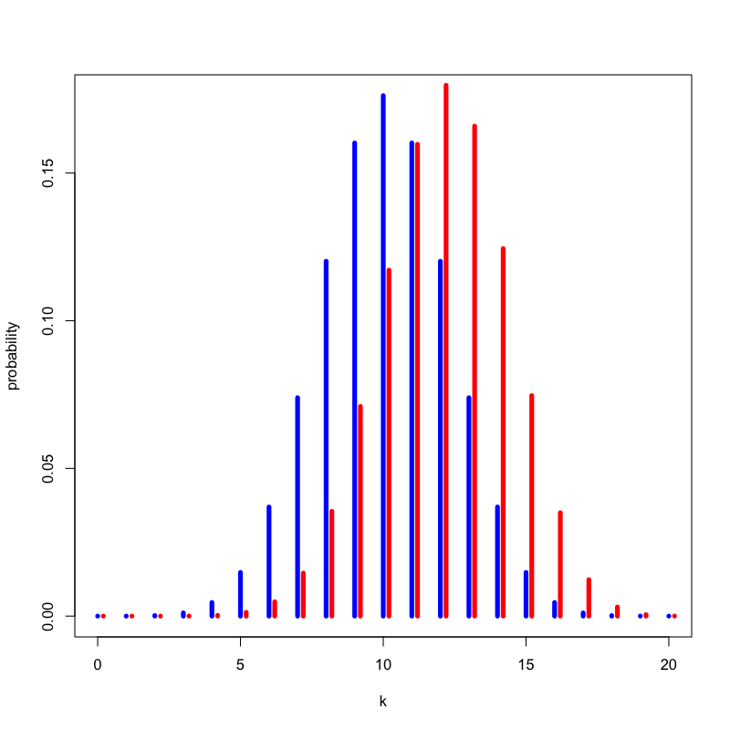
Figure 7: いかさまの有無による違い
問題
- いかさまのないコインを20回投げたとき， 15回以上表が出る確率はいくつか
解答
以下の式で計算される
\begin{equation} P(\text{表の回数}\ge 15) = \sum_{k=15}^{20}\left(20\atop k\right) 0.5^{k} (1-0.5)^{20-k} = 0.02 \end{equation}- 「20回投げて表が出た回数」を検定統計量と考える
- 「20回投げて15回以上表が出たら怪しい」と考える
- 怪しいと考える検定統計量の領域を 棄却域 という
- この方策で「いかさまのないコイン」を間違えて怪しいとしてしまう確率は0.02である
- 第一種の過誤 (type-I error) という
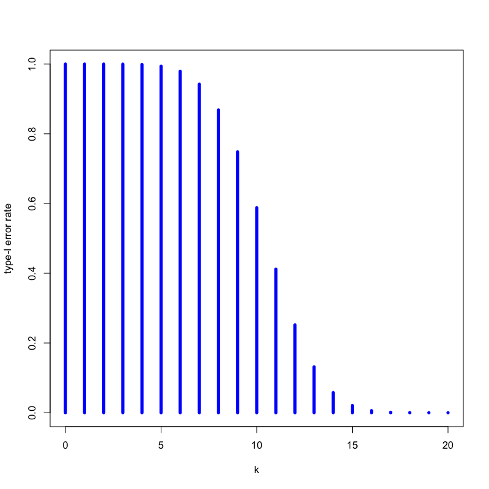
Figure 8: いかさまのないコインの場合
問題
- いかさまのあるコインを20回投げたとき， 15回以上表が出る確率はいくつか
解答
以下の式で計算される
\begin{equation} P(\text{表の回数}\ge 15) = \sum_{k=15}^{20}\left(20\atop k\right) 0.6^{k} (1-0.6)^{20-k} = 0.13 \end{equation}- この方法で「いかさまのあるコイン」を見分けられる確率は13%程度となる
- これを検出力 (power) という
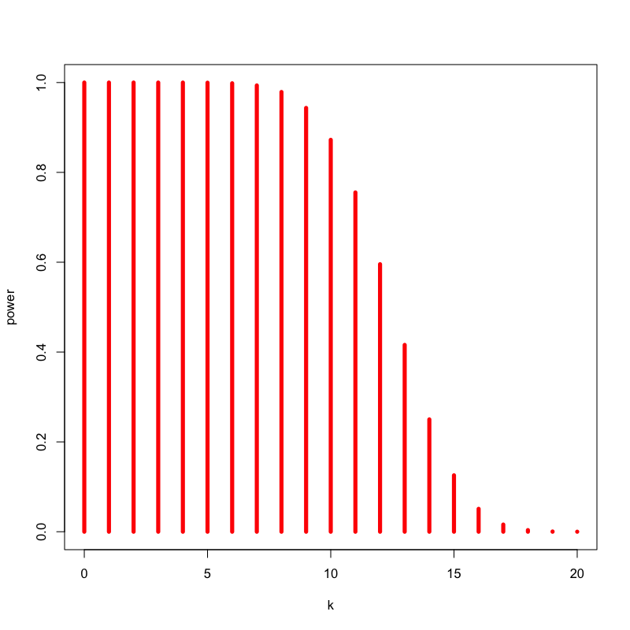
Figure 9: いかさまのあるコインの場合
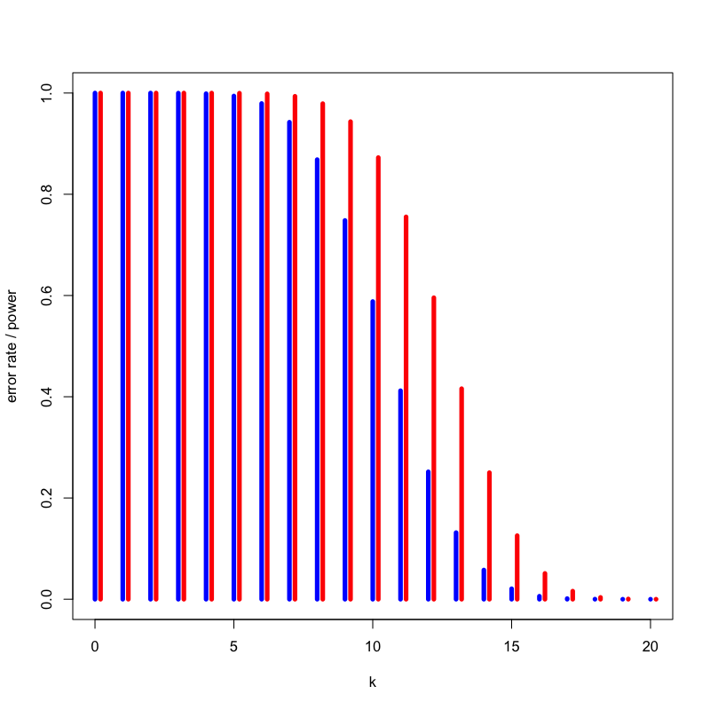
Figure 10: いかさまの有無による違い
問題
- もっとあからさまにいかさまのあるコイン(表の出る確率が0.9)を20回投げたとき， 15回以上表が出る確率はいくつか
解答
以下の式で計算される
\begin{equation} P(\text{表の回数}\ge 15) = \sum_{k=15}^{20}\left(20\atop k\right) 0.9^{k} (1-0.9)^{20-k} = 0.98 \end{equation}- この方法で「あからさまにいかさまのあるコイン」を見分けられる確率は98%程度となる
- 対立仮説によって検出力は異なる
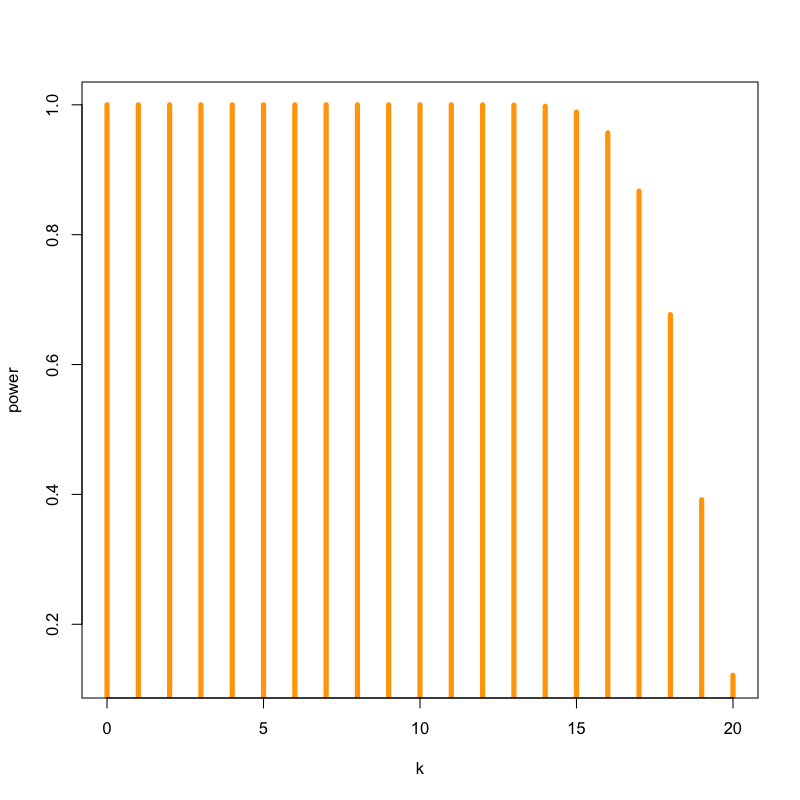
Figure 11: いかさまのあるコインの場合
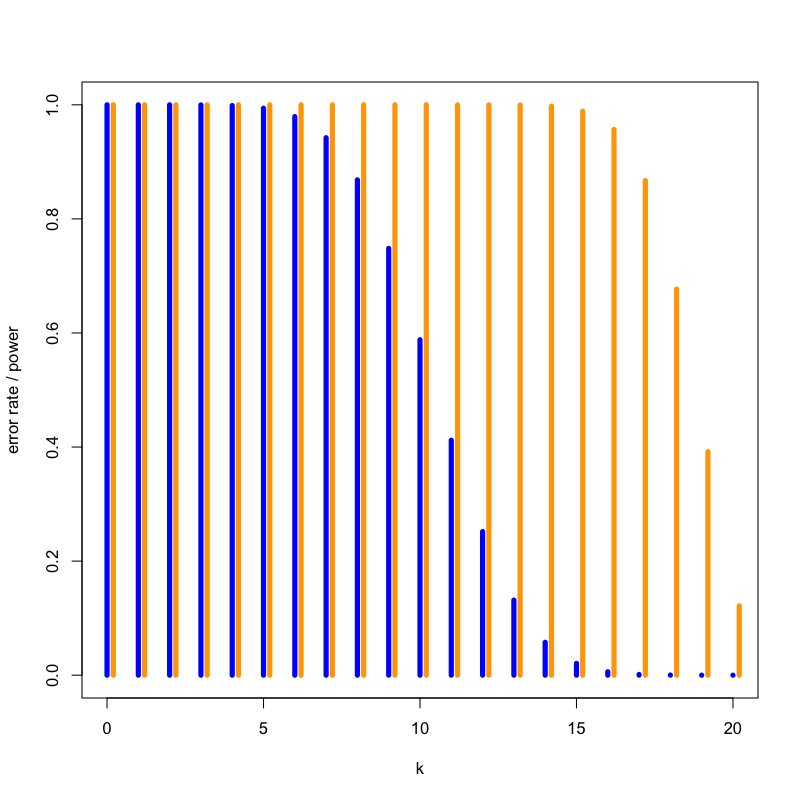
Figure 12: いかさまの有無による違い
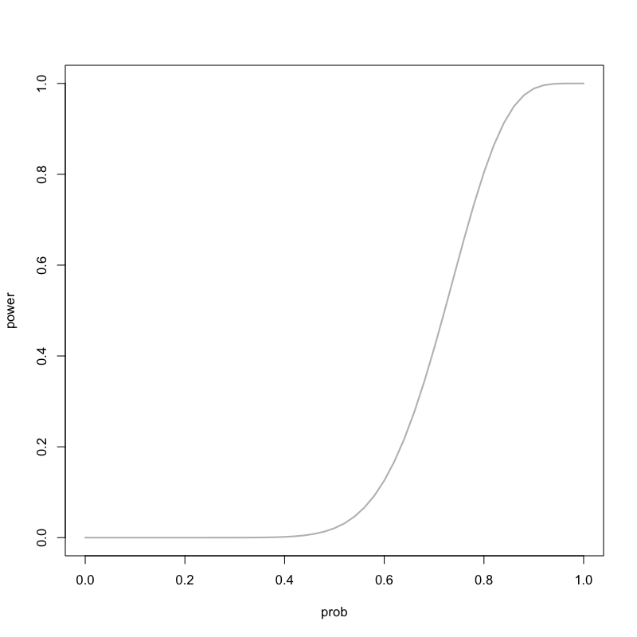
Figure 13: 対立仮説による検出力の違い
問題
- いかさまのないコインを100回投げたとき， 60回以上表が出る確率はいくつか
解答
以下の式で計算される
\begin{equation} P(\text{表の回数}\ge 60) = \sum_{k=60}^{100}\left(100\atop k\right) 0.5^{k} (1-0.5)^{100-k} = 0.028 \end{equation}- 異なる検定統計量「100回投げて表が出た回数」を考えている
問題
- いかさまのあるコインを100回投げたとき， 60回以上表が出る確率はいくつか
解答
以下の式で計算される
\begin{equation} P(\text{表の回数}\ge 60) = \sum_{k=60}^{100}\left(100\atop k\right) 0.6^{k} (1-0.6)^{100-k} = 0.543 \end{equation}- 同じ仮説だとしても検定統計量によって検出力は異なる．
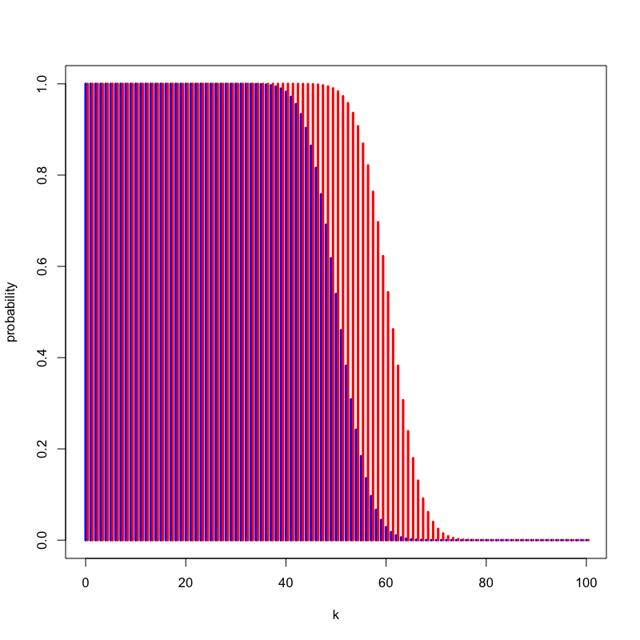
Figure 14: いかさまの有無による違い
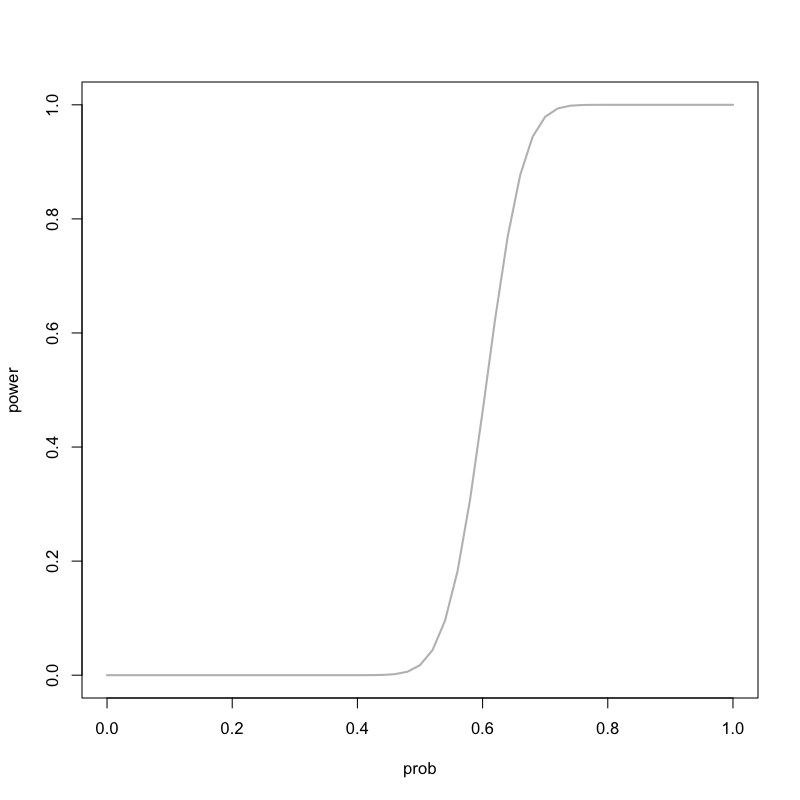
Figure 15: 対立仮説による検出力の違い
問題
- 以下の問に答えなさい
- 100個のコインがある
- このうち10個にはあるいかさまが施されている
- ある検定統計量を用いて有意水準0.05の検定を考える
- 設定した検定統計量の検出力は0.8であることがわかっている
- このときどの程度のいかさまを見破ることができるだろうか?
解答例
- 以下おおざっぱな考え方を示す
- いかさまを検出できる確率は0.8なので， 平均的には\(10\times0.8=8\)個の いかさまコインを見付けられる
- 有意水準0.05なので， 平均的には\(90\times0.05=4.5\)個 誤っていかさまコインだと判定してしまう
- 見破ったと考える12.5個のうち， 本当にいかさまをしているのは8個なので， 64%しか当たらないことになる
- 実際の状況に合わせて検定の意味を考える必要がある
p値とその誤解
p値とは
おおざっぱにいうと， p値とは特定の統計モデルのもとで， データの統計的要約 (たとえば，2グループ比較での標本平均の差) が観察された値と等しいか，それよりも極端な値をとる確率である．
- p値 は観測された値を使った検定の第一種の過誤の確率として定義される
良くある間違った記述
- p値は帰無仮説が正しい確率である
- 有意水準を5%に設定して帰無仮説を棄却した場合，その判断が誤りである確率は5%である
- p値が0.01ということは帰無仮説を棄却しても100回に1回しか間違わない
- 有意でない検定結果は帰無仮説が正しく，採択すべきであることを意味する
- 有意な検定結果は帰無仮説が誤りであり，棄却すべきであることを意味する
ASAの提言
- American Statistical Association https://www.amstat.org/asa/files/pdfs/p-valuestatement.pdf
- 日本計量生物学会による和訳 https://www.biometrics.gr.jp/news/all/ASA.pdf
提言の要旨
その1
p値はデータと特定の統計モデルが矛盾する程度をしめす指標のひとつである
- 統計モデルはいくつもの仮定を含む
- 帰無仮説は仮定の1つにすぎない
- p値が小さければ
データと帰無仮説の矛盾の程度が大きい
統計モデルの仮定のどれかが間違っている
その2
p値は，調べている仮説が正しい確率や，データが偶然のみで得られた確率を測るものではない
- 誤差をともなってばらつくのはデータである
- 仮説や真の値は確率的でない
- データが偶然のみで得られることは統計モデルの仮定の一つである
その3
科学的な結論や，ビジネス，政策における決定は，p値がある値を超えたかどうかにのみ基づくべきではない
- データ解析や科学的推論を機械的で明白なルールに貶めるようなやり方は 誤った思い込みや貧弱な意思決定につながる
- 科学的推論には研究デザイン，測定の室，外部のエビデンス，データ解析の背後にある 仮定の妥当性が重要である
その4
適正な推測のためには，すべてを報告する透明性が必要である
- p値や関連する解析は選択して報告してはいけない
- 研究の中で調べる仮説の数，データの選択基準，実行したすべての統計解析，計算したすべてのp値を開示すべきである
その5
p値や統計的有意性は，効果の大きさや結果の重要性を意味しない
- 統計的に有意であることは科学的に意味にあることと同義ではない
- どんなに小さな効果でもサンプルサイズが大きかったり測定精度が十分高ければ小さなp値になるし，その逆もしかり
- 効果の推定値が同じ大きさでも，推定の精度が異なれば異なったp値となる
その6
p値は，それだけでは統計モデルや仮説に関するエビデンスの，よい指標とはならない
- 背景情報や外部のエビデンスがなければ，p値は限られた情報しか提供しない
- p値が大きくても帰無仮説を好む証拠とはならない
- p値を計算したらデータ解析は終わりではない
次回の予定
- 第1日 : 回帰モデルの考え方と推定
- 第2日 : モデルの評価
- 第3日 : モデルによる予測と発展的なモデル